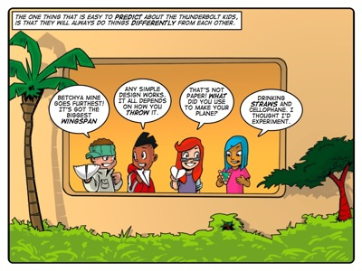
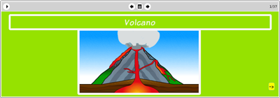

Story: The Volcano
Theme: Thinking through implications.
Synopsis
The kids are playing with paper aeroplanes and are surprised to see their creations soar into the heavens. They see the island’s ‘dormant’ volcano smoking ominously and investigate. Steaming groundwater and a sulphurous stench prompts them to return to the school, where they find Lazlo foretelling the impending attack of the ’Munchy Monster’. Farrah recognises this beast from a sketch of her Halloween costume and the kids decide to debunk Lazlo’s hysterical prophecy.
Some research enables the kids to use their observations to form a rough hypothesis that the island’s volcano is no longer dormant. They resolve to test their prediction scientifically to avoid repeating Lazlo’s error.
This story is about the role of thinking through implications to make accurate predictions. It demonstrates the ease of making predictions without carefully weighting up the implications of facts by detailing Lazlo’s crazed mutterings – but clearly demonstrates the folly of doing so. Tom points out early on that the sign of the smoking volcano means nothing until the kids can investigate its implications before making any predictions.
The kids form the hypothesis that the volcano is going to erupt. Then, in true scientific fashion, they try to prove themselves wrong. That is, rather than looking for evidence to support their prediction, they search for signs that their prediction is false.
Compare this method to Lazlo’s faith in his horoscope, a completely unscientific form of predicting the future. His horoscope could be telling him almost anything and his interpretation of it is subjective and tailored to his desire to prove himself right. He believes that ‘knowledge is a terrible burden’ but the story demonstrates that all he is burdened by is self-imposed fear and superstition.
Activity
This activity challenges learners to build paper aeroplanes and to predict how their designs will perform. Once they have observed how their plans fly, they are challenged to hypothesise what changes may improve performance. They then predict the difference their changes will make and repeat the process.
The purpose of the activity is to allow learners the opportunity to practice using the scientific method in a fun way. It also brings reduces the seemingly complex challenge of prediction down to simple, fun level.
In doing this activity we want learners to build a habit of questioning how objects behave and how they can influence their behaviour. We want them to ask, "How can I make it better?" and, "What difference will this change make? and, "What changes will produce the result that I want?"

The eToys project
In this project Jojo shows learners how to create a volcanic eruption in eToys. Learners explore the anatomy of a volcano and how an eruption entails the action of magma, lava, rock and smoke. In scripting the behaviour of each of the constituent parts of the volcano, learners come to understand volcanic activity in a much richer way than merely by reading. More importantly, the lesson learned is that anything modelled in a similar way in eToys offers a richer learning experience than can be provided by less interactive learning methodologies.